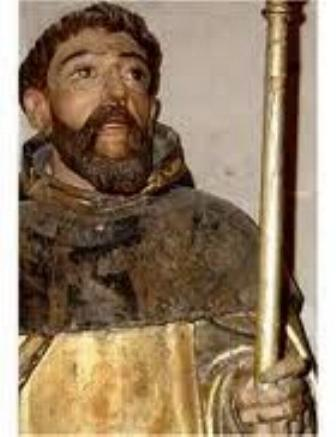
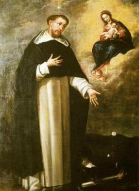

O ROSÁRIO E OS
HEREGES
CONVERTENDO OS HERESIARCAS
Nas diversas viagens que
Domingos fez a serviço do Rei e em companhia do seu amigo Bispo Diogo, descobriu
o verdadeiro sentido da sua missão. Não
como Cônego em Osma, mas como
missionário e pregador itinerante entre os hereges.
A finalidade principal da viagem
a Roma, foi do Bispo Diogo pedir ao Papa Inocêncio III, sua demissão do cargo de
Bispo, para se dedicar integralmente às pregações. Mas o Papa não aceitou e não
concordou com o propósito dele, pois sabia o quanto ele era útil e estimado na
Diocese de Osma.
No retorno ao Reino de Castela,
Diogo e Domingos passaram pelo célebre Mosteiro de Cister, na França, onde
ficaram hospedados alguns dias. Ficaram impressionados com a vida dos Monges e o
fervor com que faziam as suas orações.
Felizes por mais aquela
experiência, continuaram a viagem de retorno a Castela. Na cidade de Montpellier,
ainda na França, se encontraram com doze Abades nomeados pelo Papa, para
estudarem um meio de converter os hereges do Sul da França. Os heresiarcas
principalmente fundamentavam os seus argumentos acusando os membros da
Hierarquia Católica, de uma vida excessivamente confortável, luxuosa e até
exuberante, vivida por muitos Padres e Bispos da Igreja.
Então, o Bispo Diogo percebeu
que para combater os hereges, não era suficiente argumentar e destruir as suas
teorias absurdas, isto era necessário evidentemente através de uma argumentação
lógica e inquestionável sobre a Verdade Cristã, mas, sobretudo, era muito
importante também, o comportamento e a apresentação pessoal dos pregadores. Por
essa razão, junto com os demais se desfez de tudo, ficando apenas com alguns
livros. A pé e descalço percorriam todas as regiões pregando a palavra de DEUS e
destruindo os argumentos dos hereges.
A partir desta época, Domingos
passou a se chamar de “Frei
Domingos”, pois a palavra
“Frei”
(frater) em latim significa
“irmão”.
E assim, o grupo de missionários
se dedicou integralmente a pregação.
Numa noite em que encontraram
diversos hereges, se reuniram ao redor de uma fogueira, com a intenção de
convertê-los. Como sempre, os hereges eram críticos, orgulhosos e contadores de
vantagens, e por isso mesmo, logo desafiaram Frei Domingos:
- “Lance
o seu livro no fogo. Se ele não se queimar, aceitaremos a doutrina que você nos
propõe!”
Domingos
jogou o livro por três vezes ao fogo, mas o livro rapidamente saltava fora,
sem um mínimo de queimadura.
E numa outra ocasião, depois
de acalorada discussão entre os cristãos e os hereges, aceitando o desafio deles,
Domingos lançou o seu Livro Sagrado ao fogo por três vezes, e do mesmo modo, o
Livro saltou imediatamente para fora do fogo não sendo queimado em nenhuma
parte. Então, um dos hereges querendo provar que as suas Doutrinas Heréticas é
que estavam certas, também jogou o seu livro nas chamas e o fogo o devorou em
poucos segundos, na presença de enorme multidão. Vendo aquele prodígio muitos se
converteram, mas os de coração duro, apesar das evidências permaneceram contra,
e repletos de ódio se manifestavam contra os Servos de DEUS.
RESULTADO DAS MISSÕES
Infelizmente, em face do pouco
sucesso na evangelização no sul da França, principalmente por causa da ferrenha
e cega reação apresentada pelos fanáticos heresiarcas, o pequeno grupo de
missionários conscientes de que tinham feito o melhor que podiam, muito cansados
e decepcionados com o caráter doentio daqueles homens, pouco a pouco foram se
retirando. Até mesmo o Bispo Diogo que tinha a sua Diocese em Osma regressou a
Espanha, pois também não podia passar muito tempo distante dela. Mas cansado e
doente, não resistiu à força da enfermidade e morreu poucos dias depois da sua
chegada a Osma.
Domingos não desanimou, ficou
sozinho no Sul da França no meio dos hereges, com o único objetivo e decidida
intenção de convertê-los, anunciando-lhes o Evangelho do SENHOR. Sentiu
intimamente que ali era o seu campo de atuação, no meio dos heresiarcas para
pregar a Palavra de DEUS e lhes ensinar a verdadeira doutrina, reconduzindo
todas aquelas pessoas, ao caminho do SENHOR JESUS.
À noite rezava durante muitas
horas, deixando que o seu pensamento rasgasse o espaço infinito e fosse
descansar no aconchego SAGRADO do CORAÇÃO DIVINO. Durante o dia pregava com
disposição e paciência, tentando converter os hereges.
Embora fosse nobre, filho de
Condes, desfez-se de tudo o que possuía para viver integralmente a pobreza
evangélica. Só possuía o vestuário religioso, os textos do Evangelho de São
Mateus, as Epístolas de São Paulo e nada mais. Nem mesmo sapato possuía, andava
sempre descalço e para comer pedia esmolas. Domingos se fez tão pobre que nunca
mais teve casa para dormir. Seu teto era o mundo.
O SANTO ROSÁRIO
 Ele caminhava de cidade em cidade pregando a Palavra de DEUS e ensinando
o caminho do SENHOR. Aconteceram muitas conversões, embora os hereges continuassem duros
e inflexíveis em suas decisões. Esta realidade, apesar de seu imenso esforço, o deixava
triste e sem forças e com pouco ânimo para continuar o trabalho. Sozinho e cansado,
sentou-se na encosta de um pequeno morro, próximo a sombra de uma árvore, quando de
súbito recebeu a visita de NOSSA SENHORA. Ela estava linda como sempre, sorridente
e com o MENINO JESUS ao colo. Ela falou:
Ele caminhava de cidade em cidade pregando a Palavra de DEUS e ensinando
o caminho do SENHOR. Aconteceram muitas conversões, embora os hereges continuassem duros
e inflexíveis em suas decisões. Esta realidade, apesar de seu imenso esforço, o deixava
triste e sem forças e com pouco ânimo para continuar o trabalho. Sozinho e cansado,
sentou-se na encosta de um pequeno morro, próximo a sombra de uma árvore, quando de
súbito recebeu a visita de NOSSA SENHORA. Ela estava linda como sempre, sorridente
e com o MENINO JESUS ao colo. Ela falou:
- “Domingos,
meu filho, lembra-te que foi através da Ave Maria pronunciada pelo Arcanjo São
Gabriel que a Salvação entrou no mundo, no momento em que por obra do ESPÍRITO
SANTO, JESUS se encarnou. Pela Ave Maria você vai conseguir o êxito em sua
missão”.
Domingos refletiu
muito nas palavras da VIRGEM MARIA, por que foi exatamente pela
“Ave Maria”
que a “Salvação”
entrou no mundo, e pelas palavras
de NOSSA SENHORA, seria também pela
“Ave Maria” que ele haveria de conseguir converter
as pessoas para DEUS.
E também, NOSSA SENHORA não
apareceu sozinha, trouxe o MENINO JESUS a nos lembrar que o FILHO DE DEUS nos
ensinou o PAI NOSSO, uma preciosa oração de súplica ao PAI ETERNO, que coloca em
prioridade a Vontade Soberana de DEUS, assim como nos ensina a pedir perdão pelos muitos
pecados e transgressões que praticamos contra a Lei do SENHOR.
Então Domingos entendeu a
orientação de Nossa MÃE SANTÍSSIMA e organizou um Rosário de Orações. Num
pequeno cordão resistente colocou primeiro uma conta isolada, depois de um
pequeno espaço colocou mais dez contas juntas, outro espaço, outra conta isolada
e mais dez continhas juntas. Essa operação ele repetiu cinco vezes, como são
cinco os dedos da mão. Definiu que na conta maior isolada seria rezado o PAI
NOSSO, com a intenção de suplicar o perdão Divino antes de seguir com as outras
orações; e nas dez contas juntas rezar as orações a NOSSA SENHORA. Pelo fato da
maioria do povo não saber ler, o Rosário passou a ser um meio fácil de
rezar, e assim, propiciando as pessoas a entrarem em comunicação direta com DEUS. Por isso mesmo, naquele
cordãozinho com contas São Domingos colocou o nome de Rosário, porque rezá-lo
era como oferecer muitas rosas a MÃE DE DEUS.
E ele, com o maior interesse e
empenho, começou a rezar o Rosário diariamente, e logo veio à resposta Divina,
começaram a acontecer inumeráveis conversões. Em cada uma das suas pregações a
presença do SENHOR se fazia manifestar de modo tão sensível, que as pessoas
sentindo a força da Graça de DEUS, se ajoelhavam e suplicavam o perdão para os
seus muitos pecados. E sempre que terminava a reunião, muita gente, homens e
mulheres, ficavam felizes de poderem abraçar e pedir a Domingos uma bênção
especial. E a todos, ensinava a rezar o Rosário. Primeiro só as orações, depois
as passagens evangélicas com a vida de JESUS.
Frei Alano de La Roche, Frade
Dominicano seguidor de São Domingos, foi quem organizou alguns anos mais tarde,
e dividiu os quinze mistérios do Rosário, formando o Terço. NOSSA SENHORA
abençoou este método de oração e também, foi através dele que ficou mais
conhecida e amada pelos cristãos, recebendo o nome de NOSSA SENHORA DO ROSÁRIO.
A VIRGEM MARIA prometeu muitas graças e bênçãos a quem o rezasse constantemente.
UMA
VISÃO REVELADORA
Domingos caminhava no fim da
tarde do dia 22 de Julho de 1206, bem no alto de uma colina francesa próxima a
Fanjeaux. De lá contemplava uma planície bem cultivada de trigais e viu oculta
entre as árvores, a aldeia de Santa Maria de Prouille, com sua pequena Igreja
onde ele gostava de ir, para rezar aos pés da imagem de NOSSA SENHORA. Conta à
tradição que, durante três dias, ele viu arder sobre a Igrejinha do lugarejo um
globo de fogo. Foi então que entendeu que Prouille estava marcada com o dedo de
DEUS para ser o centro de seu apostolado e o berço da sua Ordem Religiosa, que
na continuidade dos anos ele fundou.
Na tarde do dia seguinte, ele
foi pregar na Igrejinha de Fanjeaux. Lugarejo pequeno e pacato, e como em todos
os lugares pequenos, sempre que havia uma novidade, todos se juntavam para saber
o que era... Seu sermão foi lindo e bem apropriado, conduzido pela Luz do
ESPÍRITO SANTO. Converteu mais de uma dúzia de pessoas, inclusive nove senhoras
hereges que mandavam na localidade. Terminada a reunião elas pediram um encontro
com Frei Domingos, com a finalidade de confessarem a conversão do coração,
expondo-lhe que reconheciam todos os erros das heresias que pregavam, e lhe
pediram que ajudasse a cada uma delas a viver a verdadeira fé cristã. Domingos
que rezava em silêncio olhou para elas e disse:
- “DEUS
vai lhes mostrar a quem até agora vocês estavam servindo”.
Naquele mesmo
instante, apareceu no meio da sala um grande gato preto, com os olhos grandes,
iguais ao de um boi e também com um rabo bem grosso.
As mulheres ficaram apavoradas
e em pânico, e Domingos prontamente ordenou ao animal que saísse dalí, e
imediatamente o bichano fugiu pela corda do sino da Igreja.
Este fenômeno foi à peça que
faltava a fim de consumar a conversão daquelas nove mulheres, que logo se
mostraram dispostas a ajudar e colaborar em tudo que fosse necessário e que
representasse a Vontade de DEUS.
Domingos lhes contou a Visão de
Prouille, e o significado do globo de fogo em cima da Igrejinha, e elas
prontamente se colocaram a disposição para efetivamente ajudá-lo na obra.
Em seguida, com a autorização do
Bispo de Toulose fundou uma Ordem Religiosa, e com muita fé e dedicação iniciou
os trabalhos para fazê-la aparecer e frutificar.
Todavia, a Igrejinha de Prouille
tinha sido construída por uma senhora castelã, que não a doou a Diocese, e que,
portanto, a Igrejinha lhe pertencia. Dizia as
“más línguas” que ela era uma mulher terrível, herege e mandona.
Domingos foi conversar com ela e lá permaneceram dialogando um bom tempo.
Ninguém sabe o teor do assunto e nem o que disseram. A verdade é que ela se
converteu, atendeu ao pedido de Domingos, doando o terreno e a Igrejinha a sua
Ordem Religiosa, e inclusive, tornou-se sua grande amiga e benfeitora, e bem
mais tarde, também entrou na Ordem Religiosa. Ele por sua vez, nunca revelou os
motivos da conversão daquela mulher e quando lhe perguntavam, ele respondia:
- “Foi
a Vontade de DEUS”.
AS PRIMEIRAS
MONJAS
No dia 22 de Novembro do mesmo
ano de 1206, Domingos teve a grande alegria de receber em seu pequeno Convento
de Santa Maria de Prouille as nove
filhas por ele convertidas,
acompanhadas de mais duas jovens que também desejavam seguir a vida religiosa.
No dia 27 de Dezembro, na
festividade de São João Apóstolo, revestiu suas onze filhas espirituais com o
hábito branco e preto. Branco significava a pureza que cultivavam e o preto, a
penitência que praticavam.
As novas Irmãs passaram a viver
uma vida santa em busca da perfeição espiritual. Trabalhavam com vigor e em
silêncio, rezavam ao longo de todo o dia, realizando os seus trabalhos, e juntas
rezavam na Igreja pela manhã, à tarde e a noite, nos horários estabelecidos, e
com muito amor exercitavam a caridade e a paciência, da mesma forma que
instruíam na fé todas as pessoas que as procuravam no Convento.
E admiravelmente, junto com
Domingos, rezando e suplicando a misericórdia de DEUS, as Irmãs intercederam em
benefício dos hereges, sendo que muitos foram convertidos pelo SENHOR e diversas
daquelas pessoas que retornaram ao verdadeiro cristianismo, se tornaram também
amigas fieis da Comunidade Religiosa, e sempre procuravam ajudar de algum modo.
ORDENS RELIGIOSAS
Domingos já tinha fundado a
Primeira Ordem Religiosa Feminina, e as Monjas estavam em plena atividade. Agora
começou a estudar, a idealizar e abrir outros caminhos, projetando fundar uma
Ordem Religiosa Masculina.
Naquela época os Sacerdotes
não tinham muito estudo e por essa razão, não tinham autorização para pregar o
Evangelho. Somente os Bispos é que faziam as homílias nas Santas Missas e as
pregações de um modo geral. Os Monges estudavam muito, mas viviam isolados, numa
vida de estudo e oração, e por isso eram chamados de contemplativos. Domingos
tinha vivido a experiência de contemplativo quando era Cônego em Osma, no Reino
de Castela. Mas pelo seu próprio caráter, ele era um homem de ação, ensinava e
pregava tudo o que sabia. Isto por que, além do profundo conhecimento que
possuía das Sagradas Escrituras, falava com ênfase e convicção sobre todos os
assuntos da religião católica. E assim, por essa razão, ele pregava nas Santas
Missas, pois tinha autorização especial.
E por tudo isto, ele imaginou
uma Ordem Religiosa semelhante aos Apóstolos, com uma vivência vigorosa de
“Contemplação e Ação”. Ou seja, seus Frades haveriam de estudar muito para poderem
ensinar as Verdades do Evangelho, dedicando-se também a Oração, que é o alimento do
espírito. Tudo o que fosse colhido no estudo e na oração seria transformado em
“AÇÃO”,
isto é, seria levada a humanidade através da pregação da Palavra de DEUS.
OS FRADES PREGADORES
Em 1217, para atrair a juventude
acadêmica para dentro do clero, o fundador determinou que as Casas da Ordem
fossem criadas nas principais cidades universitárias da Europa, que na época
eram Bolonha e Paris. Ele se fixou na Casa de Bolonha, na Itália, onde se
dedicou ao esplêndido desenvolvimento da sua obra, presidindo, entre 1220 e 1221
os dois primeiros capítulos gerais, destinados à redação final da
"carta magna" da Ordem.
Organizou a sua Ordem Religiosa
Masculina e após receber os seus primeiros colaboradores, preparou-os e os
enviou dois a dois, para lugares diferentes, escolhendo para eles as melhores
Universidades da Europa, para estudarem e terem uma formação digna, com o
objetivo de poderem exercitar o
“lema” criado para eles:
“Contemplação e Ação”.
Uma pessoa impressionada com a
coragem de Frei Domingos, lhe disse:
- “Mas Frei, é
uma loucura enviar estes Frades dois a dois pelo mundo”!
Frei Domingos
respondeu calmamente:
- “O trigo
amontoado apodrece, mas se a semente cai na terra, germina, cresce e dá frutos”.
Frei Domingos
não errou, por que antes da sua morte, a sua Ordem Religiosa já contava com sessenta
Conventos espalhados por quase todos os países da Europa.


Próxima Página
Página Anterior
Retorno ao Índice